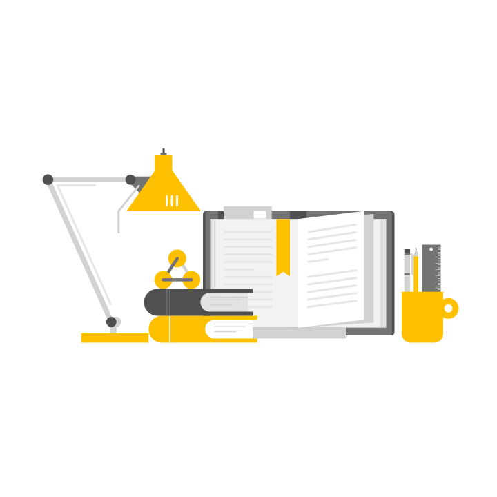

あなたの勉強をサポートします
~勉強用bgm・睡眠防止アラーム~


~このサイトについて~
このサイトでは姿勢検知を元に使用者が勉強をしている時は作業用bgmを流し、寝ている時はアラームを流してくれます。
検知している姿勢パターンは全部で5つあり、
1つ目はカメラに顔が真っ直ぐ向いている「Wake」状態
2つ目は勉強をして少し顔が下に向いている「Study」状態
3つ目は頭が下がりすぎ、またはうつ伏せになってしまっている「Sleep1」状態
4つ目は頭が後ろの方にいき、椅子にもたれてだらけている「Sleep2」状態
5つ目が頬杖をついているなど良くない姿勢である「Bad Pose」状態
がある。
(人がいないときは「Noone」状態)
~サイトの使い方~
1. このサイトを使用する際は部屋を明るくし、胸元くらいまで映る位置にカメラを設置してください。
きちんとした勉強机で行うと検知しやすくなります。
2. アラームとbgmを選択してください。
3. 準備ができたら勉強開始ボタンをクリック！
4. 一度休憩したいとき、止めたいときは休憩ボタンを押しましょう。
(休憩中に寝ないように時間が経つと自動で再開されます。)
5. あとは集中して勉強するだけ！